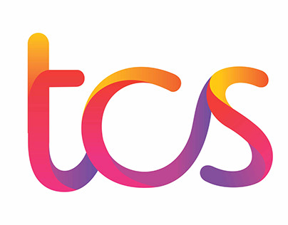

Satya Upadhyay
Building resilient cloud infrastructure and automating DevOps pipelines with 2.5+ years of hands-on experience in Azure, AWS, Linux, and CI/CD.
Gandhinagar, Gujarat, India
Experience
About me
Hi, I'm Satya Upadhyay, a results-driven Cloud & DevOps Engineer with 2.5+ years of hands-on experience at Tata Consultancy Services. I specialize in managing Linux-based production environments, cloud infrastructure on Azure and AWS, CI/CD automation, and distributed systems observability. I've consistently delivered measurable impact — reducing MTTR by 30%, improving issue detection by 40%, and cutting manual effort by 35% through intelligent automation.
I'm passionate about building resilient, scalable platforms that bridge infrastructure and development teams. From configuring NGINX load balancers and designing ELK Stack dashboards to automating operational workflows with Shell scripting and collaborating on CI/CD pipelines, I thrive in complex, high-availability environments.
I bring to the table:
Cloud Infrastructure
Hands-on expertise with Microsoft Azure and AWS — managing compute, storage, networking, and security for production-grade environments.
Linux & Systems
Deep experience with RHEL and Ubuntu — performance tuning, process management, disk I/O, and advanced troubleshooting under pressure.
CI/CD & Automation
Building and maintaining pipelines with Jenkins and Azure DevOps, and automating operational tasks with Bash/Shell scripting.
Observability
Designing dashboards and alerting using Azure Monitor, ELK Stack, Grafana, and Prometheus for proactive incident response.
Networking
Proficient in TCP/IP, DNS, HTTP/S, firewalls, load balancing, and NGINX reverse proxy for secure HA architectures.
Incident Management
Conducting Root Cause Analysis, implementing permanent fixes, and building runbooks to reduce recurring incidents.
Let's build something reliable and scalable together!
Technical Skills
The tools, platforms, and technologies I work with:


Experience
System Engineer

Tata Consultancy ServicesJan 2024 – Present | Gandhinagar, Gujarat, India
- Managed and optimized Linux-based cloud infrastructure (Azure & AWS), maintaining 99.9% uptime across production systems.
- Built and maintained observability pipelines using Azure Monitor, Log Analytics, and ELK Stack, improving issue detection speed by 40%.
- Diagnosed and resolved complex incidents across compute, storage, and network layers, reducing MTTR by 30% and recurring incidents by 20%.
- Developed Shell scripts to automate health checks, log rotation, and system maintenance workflows, reducing manual effort by 35%.
- Configured DNS resolution, firewall rules, and NGINX reverse proxy for secure, high-availability application delivery.
- Collaborated with DevOps teams on CI/CD pipelines (Jenkins, Azure DevOps) and deployment automation for cloud-native workloads.
- Conducted Root Cause Analysis (RCA) and implemented permanent fixes; documented runbooks and playbooks to improve team response.
- Supported high-availability environment design and enforced proactive monitoring strategies across distributed services.
Associate System Engineer
Tata Consultancy Services
Nov 2023 – Dec 2023 · 2 mos | Gandhinagar, Gujarat, India
- Monitored system logs and cloud performance metrics; assisted in incident resolution and change management processes.
- Reduced escalation dependency by 15% through proactive triage and documented troubleshooting workflows.
Projects
Key infrastructure and DevOps projects from my professional work.

Observability & Monitoring Platform
Architected centralized dashboards and alerting rules for multi-tier application stacks, reducing unplanned downtime by 20%.

Linux-Based Load Balancer (NGINX)
Configured NGINX as a Layer 7 reverse proxy and load balancer enabling rolling deployments and eliminating single points of failure.
Education & Certifications
Master of Computer Applications (MCA)
Master's in Computer Applications with focus on system design, networking, cloud computing, and software engineering — forming the academic backbone of my cloud and DevOps career at TCS.
AWS Certified Cloud Practitioner
Validated foundational AWS cloud knowledge including core services, security, architecture, pricing, and support — complementing hands-on Azure and AWS production experience.
Get in touch
I'm open to new Cloud & DevOps opportunities. Feel free to reach out!
Contact Information
Find Me Online
© 2025 | Designed and Coded with
Satya Upadhyay